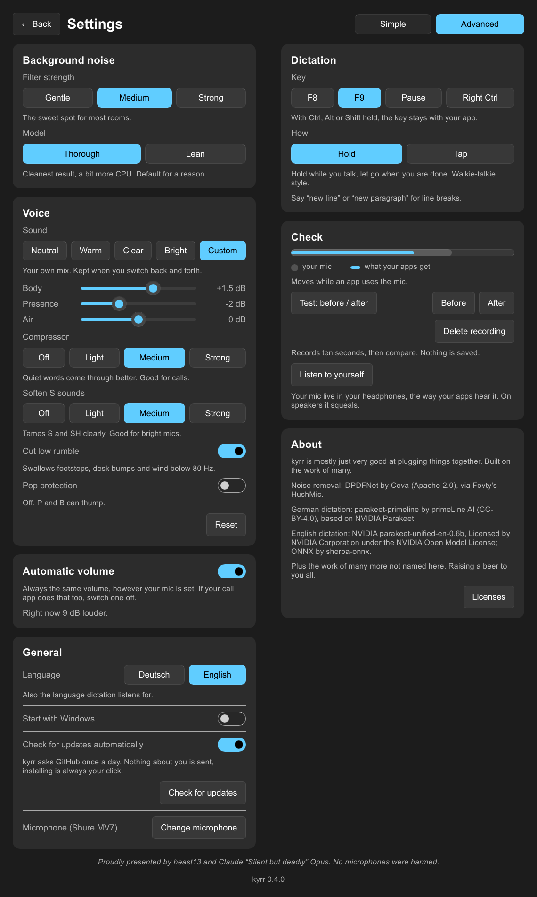

Nur deine Stimme.
kyrr ist eine kleine, kostenlose App für dein Mikrofon. Tastatur, Lüfter und Hund bleiben draußen, und was du sagst, wird in jede App getippt. Alles auf deinem Computer.
Für Windows 10/11 und Linux. Kostenlos und Open Source.
kyrr (Altnordisch): still, ruhig, in Ruhe.

Was kyrr kann
Störgeräusche entfernen
Ein neuronaler Filter arbeitet in Echtzeit direkt am Mikrofon, für jede App: Teams, Zoom, Discord, OBS, den Browser. Ein großes Modell für das sauberste Ergebnis, ein kleines für ältere Laptops.
Stimme verbessern
Ein bisschen Politur, wenn die Störgeräusche weg sind: ein Klang (von neutral bis hell, oder dein eigener), ein Kompressor, weichere S-Laute, Popschutz und ein Schnitt gegen tiefes Dröhnen.
Automatische Lautstärke
Deine Stimme kommt immer gleich laut an, egal wie laut das Mikrofon eingestellt ist. Von Anfang an eingeschaltet.
Diktat
F9 halten, sprechen, loslassen. Der Text landet dort, wo dein Cursor steht. Deutsch und Englisch, auf deinem Computer erkannt. Sag „neue Zeile“ (oder „new line“) für einen Zeilenumbruch.

Regler, falls du Regler magst
Die Voreinstellungen passen. Wenn du mehr willst, haben die Einstellungen die Regler und einen Check, ob alles wirkt: ein Pegel live von dem, was das Mikrofon hört und was die Apps bekommen, ein Zehn-Sekunden-Test zum Abspielen vor und nach kyrr und Mithören über Kopfhörer.